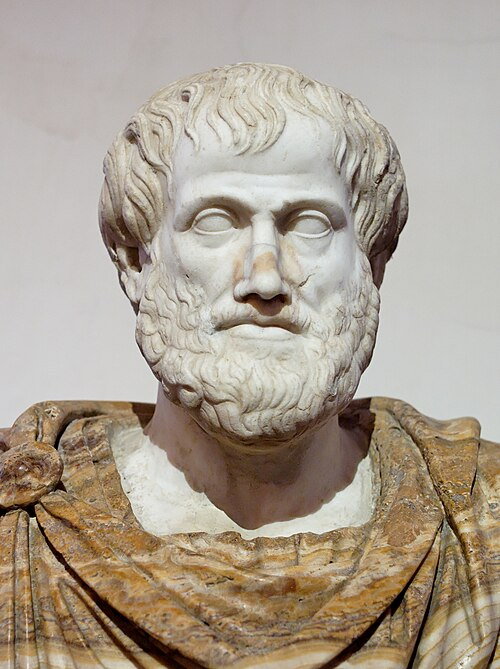
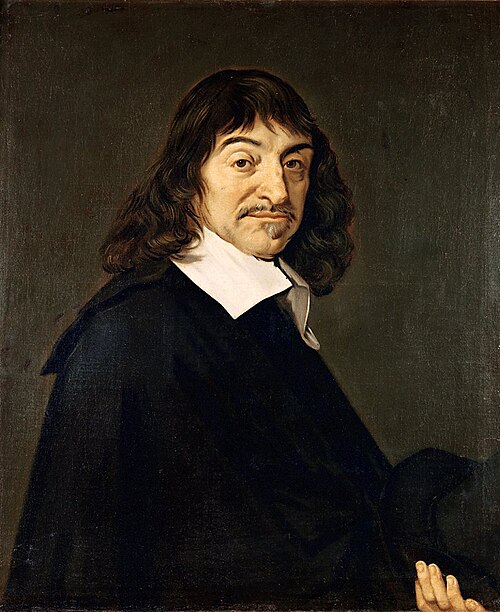
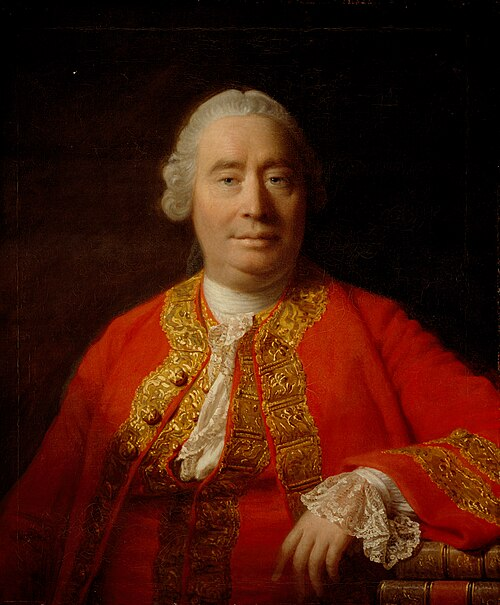
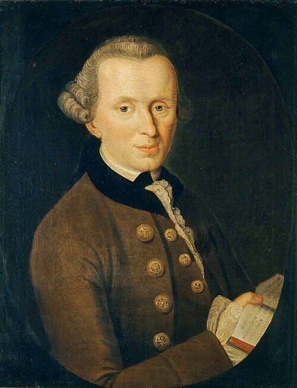

Filosofia încearcă de două milenii să răspundă la o singură întrebare: ce este omul? Prezentarea urmează firul acestor răspunsuri — de la definițiile clasice, la omul care se face pe sine.
Paul Gauguin, D’où venons-nous ? Que sommes-nous ? Où allons-nous ? (1897) — Muzeul de Arte Frumoase, Boston. Cele trei întrebări de alături sunt titlul tabloului.
derulează
01 · Problema filosofică
De ce este omul o problemă?
Filosofia nu cercetează omul cu experimente, ci cu întrebări. Tocmai de aceea răspunsul nu se lasă epuizat.
Teoriile despre natura și sensul existenței umane descoperă o complexitate excepțională: ființa umană, relațiile individului cu semenii, multiplele manifestări sociale — și, odată cu ele, dificultatea de a epuiza problema sau de a găsi răspunsuri certe.
Demersul filosofic nu procedează asemenea celui științific, prin observații și experimente: el formulează întrebările prin care — identificând natura sau esența omului, dacă acestea există — să explice apoi posibilitățile comportamentului uman.
În filosofia tradițională, problema omului a fost înțeleasă ca problemă a definirii lui: o definiție ar da omului o esență — setul de trăsături care îl fac om.
antropologie filosoficăființăesențăcondiție umană
Filosofia tradițională a răspuns printr-o singură strategie: definiția.
02 · Perspective tradiționale
Cine este omul?patru definiții, de la Antichitate la Iluminism
1 / 5 derulează în lateral
…
Definiția ca program filosofic
O definiție ar fixa o esență umană — trăsăturile date omului, prin care devine determinabilă identitatea ființei umane. Patru filosofii, patru astfel de definiții.
Urmează: Aristotel → Descartes → Hume → Kant

Antichitate · sec. IV î.Hr.
I
Aristotel
Omul se diferențiază de celelalte ființe prin limbaj și moralitate. Ca ființă socială, își împlinește menirea în comunitate, practicând virtuțile: cumpătarea, înțelepciunea, curajul, dreptatea.
Prin binele propriu participă la binele cetății — așa își manifestă propria natură: sociabilitatea.
limbajmoralitatesociabilitatevirtute

Epoca modernă · raționalism
II
René Descartes
Omul este dualitate — și substanță întinsă, și substanță cugetătoare — iar esența lui este cugetarea. Raționalismul introduce astfel în antropologie condiția omului de subiect cunoscător.
„Gândesc, deci exist.”
raționalismdualismsubiect cunoscător

Epoca modernă · empirism
III
David Hume
Înainte de a fi o ființă rațională, omul este o ființă sensibilă: se manifestă ca ființă empirică, dotată cu afectivitate și voință — esențiale pentru înțelegerea omului.
empirismsensibilitateafectivitatevoință

Iluminism · sinteza critică
IV
Immanuel Kant
Nici raționalismul, nici empirismul nu sunt suficiente singure: prin latura corporală omul are înclinații biologice, egoiste; prin cea spirituală este ființă morală. De aceea, nu vom ști ce este omul înainte de a ne întreba:
Ce poate să știe? · Ce trebuie să facă? · Ce poate să spere?
sintezăființă moralădemnitate
Patru definiții, patru esențe — și totuși niciuna nu-l cuprinde pe om. Poate că întrebarea se pune altfel.
03 · Esența omului
Un lucru de mijloc între nimic și tot
Blaise Pascal descrie natura și condiția umană din perspectiva antropologiei creștine. Modernitatea analizei sale stă în felul în care surprinde „disproporția” existenței umane.
Infinit · TotOmNimic · Neant
„Fiind nimic în comparație cu infinitul și tot prin comparație cu neantul, omul este un lucru de mijloc între nimic și tot.”
I
În plan ontologic
Unica ființă rațională — „judecător al tuturor lucrurilor”. Dar unicitatea nu-l scutește de nimicnicie: „imbecil vierme de pământ”.
II
În plan gnoseologic
Cugetarea îi este destinată; certitudinea, niciodată: cunoașterea sa rămâne „îngrămădire de incertitudine și de eroare”.
III
În plan moral-intențional
Unica ființă morală — și totuși singura care face răul intenționat: deodată „mărire” și „lepădătură” a Universului.
În ciuda contradicțiilor, Pascal subliniază demnitatea omului: capacitatea de a se vedea nenorocit, de a se înțelege pe sine — cugetarea. Un copac nu se știe nenorocit.
Așezat astfel în centrul lumii (antropocentrism), omul este deodată măreție — prin înțelegerea de sine — și vulnerabilitate: slăbiciunile și neputințele rațiunii sale, în plin secol raționalist.
Dacă omul nu are o esență fixă, ci trăiește o disproporție — secolul XX trage concluzia.
04 · Abordări contemporane
De la esență la existență
Dacă omul nu are o natură dată, atunci nu „este” — devine. Secolul XX continuă exact gestul lui Pascal.
Jean-Paul Sartre — omul se face pe sine
Nu există o natură umană dată, deci nici un sens prestabilit al existenței. Nefiind altceva decât ceea ce face din sine, omul își asumă — cu responsabilitate maximă — propriile alegeri: alegeri de sine.
„Omul nu este, ci devine!”Jean-Paul Sartre
Martin Heidegger — de la animalitas la humanitas
Prin formule ca „omul este animal rațional”, tradiția occidentală a exilat omul în animalitas: nu era confundat cu animalul, dar esența lui era subapreciată. Soluția: gândirea omului ca humanitas — a omului ca om.
Alteritatea — conștiința de sine prin celălalt
Alteritatea nu e doar o categorie abstractă a spiritului, ci o reală stare de spirit, fără de care experiența umană nu ar fi posibilă: prin prezența celuilalt, conștiința de sine se împlinește și se îmbogățește.
Eu
Tu
dialogîntâlnireprietenieteamăfricălibertate
Lucian Blaga — omul, ființă culturală
Trăitor în spațiul creației, omul își manifestă perfectibilitatea: saltul ontologic de la animalitate la umanitate. Prin experiența fundamentală a culturii, se plasează „întru mister și pentru revelare”, ca subiect creator în Univers.
Numai omul își poate forma o conștiință filosofică — calitate psiho-spirituală prin care gândirea se gândește pe ea însăși.
Se face pe sine, se împlinește prin celălalt, creează lumi culturale. Ce rămâne, dincolo de toate aceste răspunsuri?
05 · Sinteză
Persoană, obiect de respect
Omul nu poate fi doar „animal rațional” sau „animal politic”: el este persoană, obiect de respect.
Umanitatea, afirma Kant, este ea însăși o demnitate: este o necesitate morală — o datorie — să-i tratăm pe oameni respectând legea morală, care ne spune că orice om este scop în sine, și nu doar mijloc pentru interesele noastre egoiste.
Numai o antropologie întemeiată pragmatic poate să surprindă în om ființa rațională și liberă. De la Socrate la Sartre, întrebarea despre om rămâne deschisă — fie că e citită ca ființă socială (Aristotel), ca subiect cugetător (Descartes), ca ființă sensibilă (Hume), ca sinteză morală (Kant), ca devenire liberă (Sartre) sau ca disproporție între neant și infinit (Pascal).
Poate că tocmai aceasta este lecția: omul nu se lasă închis într-o definiție — el este ființa care continuă să se întrebe.
06 · Glosar
Termeni-cheie
Antropologie filosofică
Disciplină filosofică în care problema omului este tratată sub aspectul naturii, esenței, locului și rostului său în lume.
Alteritate
Corelativ al identității; calitatea de a fi diferit.
Condiție umană
Modul în care omul se manifestă în raport cu natura, istoria, ființa; ceea ce condiționează existența umană; modul de ființare specific omului.
Identitate
Ansamblul trăsăturilor prin care se determină ce este și cum este omul în raport cu celelalte ființe.
Ontologie
Domeniu filosofic al cărui obiect este Ființa în sine; teorie despre existență în ansamblu.
Metafizică
Filosofie primă — disciplina primelor principii.
07 · Verificare
Verifică-ți înțelegerea
Patru întrebări pornind direct din paginile 6–8. Alege răspunsul; vei primi imediat explicația.